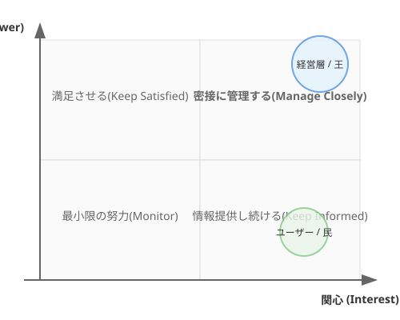
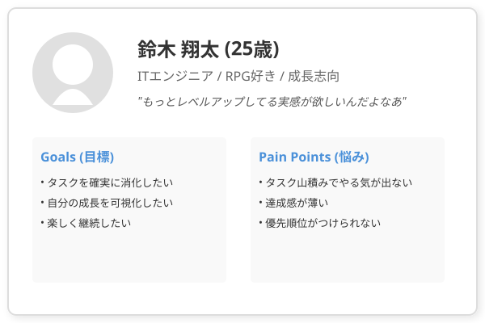

1.3 誰に聴くか？——AIペルソナとの対話
導入: 仮想のユーザーを召喚する

前節では、ユーザーの「隠れた願い」を引き出すアクティブ・リスニングを学びました。
しかし現実には、インタビューの機会は限られています。忙しいユーザーに何度も質問するわけにはいきません。
「もっと練習したい」「仮説を検証したい」「でも相手がいない」——そんなとき、AIは最高の練習相手になります。
このセクションでは、ソフトウェア開発で古くから愛用されてきたペルソナ法を学び、AIという「依代（よりしろ）」を与えることで、仮想のユーザーと何度でも対話する技術を身につけます。
理論的背景: ペルソナ法という伝統儀式
ペルソナとは何か

ペルソナ法は、1990年代にアラン・クーパーが提唱した手法です。
ターゲットユーザーを代表する架空の人物像を作り上げ、開発の指針にします。
ペルソナは単なる「ユーザー属性の箇条書き」ではありません。名前があり、年齢があり、趣味があり、悩みがあります。まるで小説の登場人物のように、生き生きとした人間像を作るのです。
なぜペルソナが有効なのか
ペルソナが効果を発揮する理由は3つあります。
- 共感の装置: 「30代男性会社員」より「田中太郎さん（32歳、2児の父、通勤時間にスマホゲームが唯一の息抜き）」の方が心に響く
- 意思決定の基準: 「この機能、太郎さんは使うだろうか？」と問うことで、独りよがりな設計を防げる
- チームの共通言語: 全員が同じ「仮想のユーザー」を脳内に共有できる
伝統的なペルソナの作り方
従来のペルソナ作成は、以下のプロセスで行われてきました。
- 調査: 実際のユーザーへのインタビューやアンケート
- 分類: 回答をパターン化し、ユーザー群を特定
- 具体化: 代表的なユーザー像を1〜3人分作成
- 共有: チーム全員がアクセスできる場所に掲示
このプロセスは有効ですが、時間がかかります。調査だけで数週間を要することも珍しくありません。
AI時代のアプローチ: ペルソナに命を吹き込む
「書類上の設定」から「語りかける存在」へ
現代の私たちは、ペルソナにAIという強力な依代を与えられます。これにより、ペルソナは紙の上の設定から、実際に語りかけてくる生きた存在へと進化します。
従来のペルソナ: 壁に貼られたポスター。眺めるだけ。 AIペルソナ: 質問に答え、感情を表現し、予想外の反応を返す対話相手。
AIペルソナの作り方
AIにペルソナを演じさせるには、以下の情報を与えます。
あなたは以下の人物として振る舞ってください。
【基本情報】
- 名前: 佐藤美咲（28歳）
- 職業: フリーランスのWebデザイナー
- 家族: 一人暮らし、猫1匹
【性格・特徴】
- 完璧主義で、タスクを先延ばしにしがち
- SNSでの情報収集が日課
- ゲームは好きだが「時間を浪費している」と罪悪感がある
【現状の悩み】
- 案件が複数重なると優先順位がわからなくなる
- 締め切りに追われる日々にストレスを感じている
- 既存のToDoアプリは「できなかったこと」が可視化されて辛い
【回答のルール】
- 感情的かつ少し曖昧に答えてください
- 最初から全てを話さず、質問に応じて徐々に本音を明かしてください
- 時々、話が脱線してもOKです（リアルなユーザーのように）このプロンプトを与えたAIに対して、あなたは開発者としてインタビューを行います。
実践例: QuestForgeのペルソナたち
メインペルソナ: 勇者志望のAさん
1.2節で登場したAさんを、より具体的なペルソナに仕上げてみましょう。
名前: 鈴木 翔太（25歳） 職業: IT企業のジュニアエンジニア（入社2年目） 趣味: RPGゲーム、アニメ鑑賞、プログラミング勉強会 悩み: やるべきことは多いが、優先順位がつけられない。成長実感がなく焦っている。 性格: 素直で前向きだが、飽きっぽい。新しいもの好き。 一言: 「もっとレベルアップしてる実感が欲しいんだよなあ」
AIペルソナとの対話例
以下は説明のために作成した架空の対話です。実際にAIに翔太を演じさせ、QuestForgeの仕様を深掘りしてみましょう。
あなた: 「普段、タスク管理ってどうしてますか？」
AI（翔太）: 「えっと、一応Notionにリスト作ってるんですけど……見返さないんですよね。書いた時点で満足しちゃうというか」
あなた: 「満足しちゃう、というのは？」
AI（翔太）: 「なんか、書き出しただけで仕事した気になっちゃうんです。でも翌日見ると、全然進んでなくて凹む。ゲームだったらクエスト受注した瞬間からワクワクするのに」
あなた: 「ゲームと何が違うと思いますか？」
AI（翔太）: 「うーん……ゲームって、やるべきことが明確じゃないですか。『ゴブリンを5体倒せ』とか。現実のタスクって、どこから手をつければいいかわからない」
この対話から、新たな洞察が得られました。「タスクの細分化と明確なゴール設定」がQuestForgeの核心機能であるべきだ、と。
サブペルソナの活用
メインペルソナだけでは視野が偏ります。異なるユーザー層を代表するサブペルソナも用意しましょう。
| ペルソナ | 年齢・職業 | 特徴 | QuestForgeへの期待 |
|---|---|---|---|
| 翔太 | 25歳・エンジニア | ゲーム好き、成長志向 | レベルアップの実感 |
| 美咲 | 28歳・デザイナー | 完璧主義、先延ばし癖 | 小さな達成感の積み重ね |
| 健一 | 42歳・マネージャー | チーム管理、多忙 | チームの進捗可視化 |
それぞれのペルソナをAIに演じさせ、同じ質問に対する異なる反応を観察します。これにより「誰のために作るのか」が鮮明になります。
ハンズオン: AIペルソナと対話してみよう
ステップ1: ペルソナを設計する
あなたが作りたいアプリのターゲットユーザーを1人、具体的に想像してください。以下の項目を埋めましょう。
- 名前・年齢・職業
- 性格（3つのキーワード）
- 現在の悩み（具体的に）
- 趣味・日常の過ごし方
ステップ2: AIに演じさせる
ステップ1で作ったペルソナを、前述のプロンプトテンプレートに当てはめてAIに入力してください。
ステップ3: インタビューする
5〜10回の質問を投げかけ、以下を探りましょう。
- ユーザーが本当に実現したいことは何か？
- 既存の解決策では何が足りないと感じているか？
- どんな瞬間に感情が動くか（嬉しい、もっとこうだったら、ワクワク）？
ステップ4: 発見をまとめる
対話を終えたら、AIに以下のように依頼してみましょう。
ここまでの対話を振り返り、以下の形式でまとめてください：
1. このユーザーの「隠れた願い」（1文で）
2. 最も重要な機能要求（3つ）
3. 意外だった発見（1つ）まとめ
- ペルソナは共感の装置: 抽象的な「ユーザー」ではなく、具体的な「人」として捉えることで設計の精度が上がる。
- AIは最高の役者: ペルソナに命を吹き込み、何度でもインタビューの練習ができる。
- 複数ペルソナで視野を広げる: 1人だけでなく、異なる属性のペルソナで仮説を検証する。
- 対話から発見が生まれる: 事前に想定していなかった要求が、対話の中から自然に浮かび上がる。
さらに学ぶためのリソース
- 📚 書籍: アラン・クーパー『About Face: インタラクションデザインの極意』（ペルソナ法の提唱者による実践ガイド）
- 📚 書籍: ジェフ・パットン『ユーザーストーリーマッピング』（ペルソナからストーリーへの展開方法）
- 🔗 参考: ニールセン・ノーマン・グループのペルソナ記事群
AIへの詠唱例
このセクションで学んだことを実践するためのプロンプト：
# ペルソナの自動生成
以下の条件を満たすペルソナを3人作成してください。
それぞれ異なる年代・職業・性格にしてください。
**アプリの概要**: QuestForge（タスク管理をRPG風に楽しむアプリ）
**ターゲット**: 日々のタスクに追われている社会人
各ペルソナについて以下を記述してください：
- 基本情報（名前、年齢、職業、家族構成）
- 性格と特徴
- 現在の悩み
- このアプリに期待すること
- 使わない理由になりそうなこと# ペルソナ間の対立を発見する
以下の2人のペルソナがQuestForgeに対して
異なる期待を持っています。
ペルソナA: 翔太（25歳、ゲーマー、個人利用）
ペルソナB: 健一（42歳、マネージャー、チーム利用）
この2人の要求の両立が求められる場面を3つ挙げ、
それぞれの解決策を提案してください。